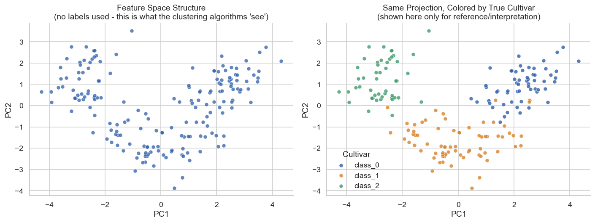
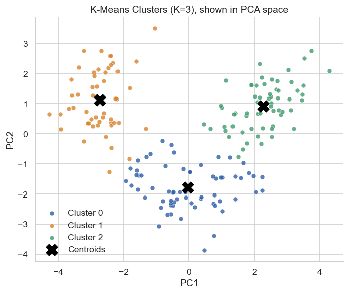
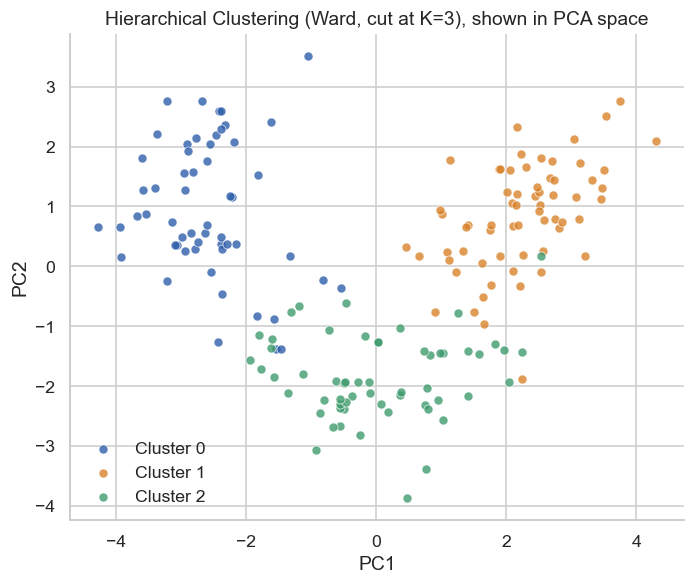
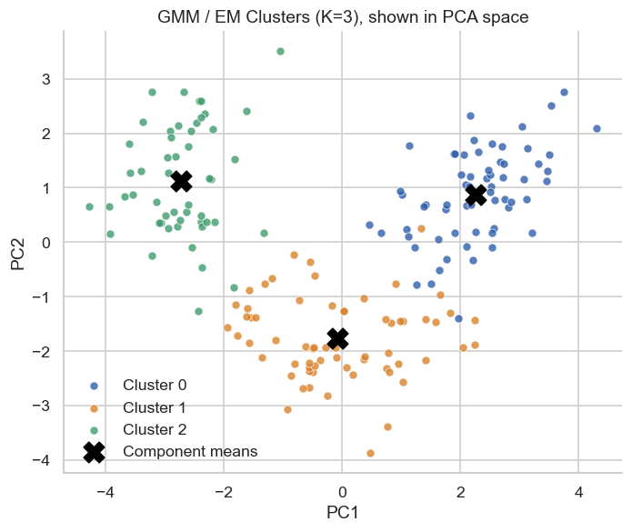

Dataset
- UCI Wine Recognition dataset
- 178 observations
- 13 chemical features
- Loaded through scikit-learn
MACHINE LEARNING · DATA SCIENCE
Comparing K-means, hierarchical clustering and Gaussian mixture models to discover patterns in the UCI Wine Recognition dataset.
View the Notebook on GitHubPROJECT OVERVIEW
This project compares three unsupervised machine learning approaches: K-means clustering, hierarchical clustering using Ward linkage, and Gaussian mixture models (GMM).
The analysis uses the UCI Wine Recognition dataset, containing 178 observations and 13 chemical features. The objective is to identify patterns and group similar observations without using known class labels during clustering.
PROBLEM AND OBJECTIVE
Unsupervised learning identifies structure in data when category labels are unavailable or intentionally excluded from model development.
Different clustering methods make different assumptions about how observations should be grouped. This project investigates how their results compare on the same dataset.
How do K-means, Ward hierarchical clustering and Gaussian mixture models compare in their ability to identify meaningful groups within the Wine Recognition dataset?
MY CONTRIBUTION
I prepared the dataset, explored its features, standardized the variables, applied principal component analysis, implemented the three clustering approaches and compared their evaluation metrics.
I also documented the analytical workflow and interpreted the differences between the clustering results.
DATA AND METHODS
ANALYTICAL PROCESS
PROJECT RESULTS
The three clustering approaches were evaluated using silhouette scores and adjusted Rand indices.
| Algorithm | Silhouette Score | Adjusted Rand Index |
|---|---|---|
| K-means | 0.285 | 0.897 |
| Hierarchical (Ward) | 0.277 | 0.790 |
| Gaussian Mixture Model | 0.284 | 0.880 |
K-means achieved the highest adjusted Rand index of 0.897, indicating the strongest agreement with the known wine cultivar categories in this experiment.
The three methods produced relatively similar silhouette scores, ranging from 0.277 to 0.285. This suggests that their internal cluster separation was broadly comparable.
Known class labels were used for external evaluation, not to train the clustering models.
DATA VISUALIZATION
The figures below are taken from the project Jupyter Notebook and illustrate the original clustering analysis.




LIMITATIONS AND LESSONS
The dataset is relatively small, so results from this experiment should not be assumed to generalize to larger or more complex datasets.
Clustering results can depend on preprocessing, algorithm settings and assumptions about cluster structure.
This project strengthened my understanding of unsupervised learning, dimensionality reduction, internal and external validation, and comparative model evaluation.
PROJECT EVIDENCE
The public GitHub repository contains the Jupyter Notebook and project documentation.